1. Текущий задел
1.1. Прототип 1 (общий) – основные функции
Система анализа статистических форм представляет собой комплексную платформу для интеллектуального анализа образовательных данных Российской Федерации за период 2015-2024 годы. Прототип обеспечивает автоматизированную обработку статистических форм ОО-1 по всем 89 субъектам РФ, включая федеральные и региональные данные общим объемом около 10 лет статистической отчетности.
Ключевой особенностью системы является интеграция современных технологий искусственного интеллекта с традиционными методами обработки данных. Telegram-бот с поддержкой больших языковых моделей (GPT-4o) позволяет пользователям делать естественно-языковые запросы к статистическим данным, получая интеллектуальные ответы с автоматическим поиском релевантной информации через Neo4j графовую базу данных или внешние источники. ETL-компонент обрабатывает сложные Excel-файлы с объединенными ячейками и многоуровневыми структурами, создавая узлы в графовой базе данных для последующего анализа.
Веб-интерфейс системы предоставляет интерактивные карты России с региональными показателями и временные ряды данных через Flask Dashboard. Все компоненты координируются центральным System Coordinator. Архитектура построена на модульном принципе с поддержкой как локального, так и облачного развертывания через Neo4j Aura Cloud. Техническая документация: https://github.com/KochemirovSergey/stat_forms/tree/main/docs
graph TB
%% Система координации
subgraph "Система координации"
COORD[System Coordinator<br/>CLI управление<br/>Health checks<br/>Graceful shutdown]
end
%% Пользовательские интерфейсы
subgraph "Пользовательские интерфейсы"
TGBOT[Telegram Bot<br/>Естественно-языковые запросы]
WEBAPP[Web Dashboard<br/>Интерактивные карты и графики]
end
%% Обработка запросов
subgraph "Обработка запросов"
LLM[LLM интеграция<br/>OpenAI GPT-4o<br/>LangChain<br/>Анализ запросов]
end
%% Визуализация
subgraph "Визуализация"
VIZ[Визуализация<br/>Plotly карты<br/>Временные ряды<br/>Региональная аналитика]
end
%% ETL процессы
subgraph "ETL процессы"
DATA[Исходные данные<br/>~850 Excel файлов<br/>2015-2024 годы<br/>89 регионов]
ETL[ETL компоненты<br/>Excel → CSV → Neo4j<br/>Федеральные данные<br/>Региональные данные]
end
%% Внешний поиск
subgraph "Внешний поиск"
TAVILY[Tavily Search<br/>Поиск в интернете<br/>Актуальная информация]
end
%% Данные и хранение
subgraph "Данные и хранение"
NEO4J[Neo4j Graph DB<br/>Сетевые узлы<br/>Расчетные узлы<br/>Региональные данные]
GEO[Геоданные<br/>russia_regions.parquet<br/>89 регионов РФ]
end
%% Связи координации
COORD --> TGBOT
COORD --> WEBAPP
COORD --> ETL
%% Связи обработки
TGBOT --> LLM
LLM --> TAVILY
LLM --> NEO4J
%% Связи визуализации
WEBAPP --> VIZ
VIZ --> NEO4J
VIZ --> GEO
%% Связи данных
DATA --> ETL
ETL --> NEO4J
%% Стили
classDef coordinator fill:#e8f5e8,stroke:#4caf50
classDef interface fill:#e3f2fd,stroke:#2196f3
classDef processing fill:#f3e5f5,stroke:#9c27b0
classDef visualization fill:#fff3e0,stroke:#ff9800
classDef data fill:#fce4ec,stroke:#e91e63
classDef search fill:#f1f8e9,stroke:#8bc34a
classDef storage fill:#fff8e1,stroke:#ffc107
class COORD coordinator
class TGBOT,WEBAPP interface
class LLM processing
class VIZ visualization
class DATA,ETL data
class TAVILY search
class NEO4J,GEO storage
1.2. Прототип 2 – агент-аналитик
Новый прототип системы — это рефакторинг старой версии на базе фреймворка LangGraph. Теперь ключевые методы и обработчики из прежних монолитных модулей оформлены как отдельные инструменты (“tools”), которые интеллектуальный агент может вызывать по мере необходимости — например, для запроса онтологий, данных или генерации диаграмм. Введено общее типизированное состояние (OntologyState), позволяющее передавать результаты работы и вспомогательную информацию между узлами, что повышает прозрачность и управляемость всей логики.
Что уже перенесено:
Логика интеллектуального анализа и маршрутизации запросов пользователя (классификация запроса как количественного, образовательного или агентского).
Доступ к базе Neo4j и инструменты для получения структуры онтологий и конкретных данных, генерация mermaid-диаграмм на лету.
Работа с внешним поиском данных (например, Tavily).
Централизованный контроль итераций и финальной агрегации результата в узле-оценщике.
Что еще не перенесено:
Интерактивные дашборды и визуализация на Flask/Plotly остаются в старой архитектуре и пока отсутствуют в LangGraph-прототипе.
ETL-модули (парсинг и загрузка Excel) не интегрированы: в будущем этот слой будет выделен в отдельного агента-парсера, взаимодействующего с основным агентом.
Telegram-бот и веб-интерфейс нового типа не реализованы.
Нет региональной детализации и работы со всеми 89 субъектами РФ в этом прототипе.
Таким образом, новый прототип — это модульное “ядро” для интеллектуальной логики и работы с онтологиями, с переносом инструментальных методов из старого монолита и закладкой основной архитектурной шины для интеграции будущих компонентов (ETL, дашборды, интерфейсы) в агентном формате.
Техничексая документация: https://github.com/KochemirovSergey/agent_analitics
1.2.1. Сриншоты прототипа

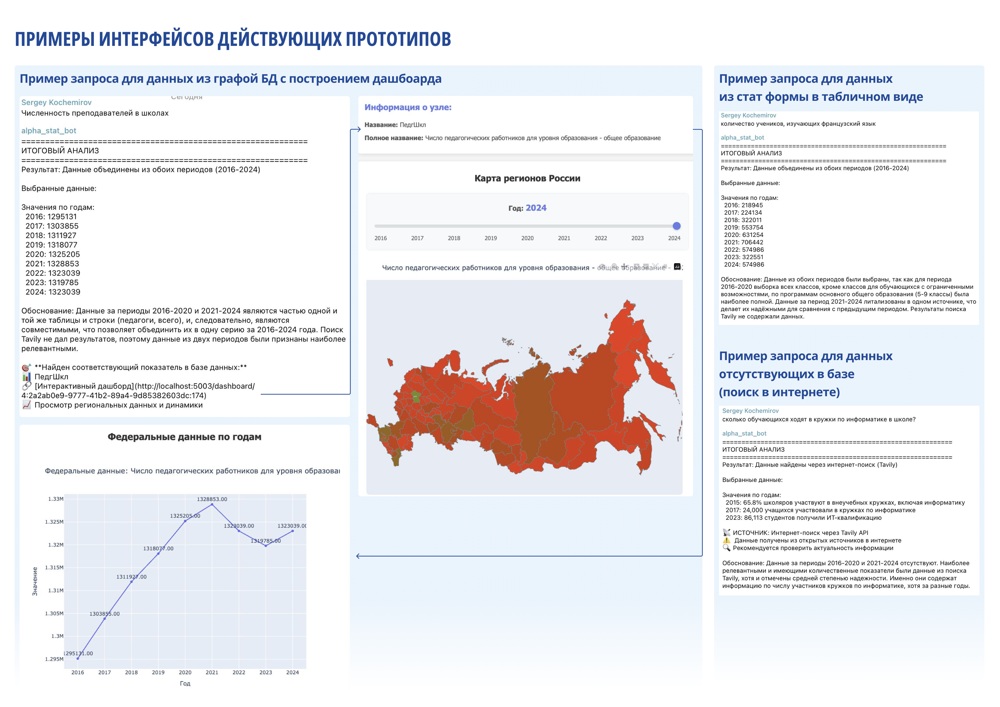
1.3. Референсы по дашбордам
https://issekdash.hse.ru/viewer/public?dashboardGuid=f1b4484eecee40699e1036e6033125cb https://bi.gks.ru/biportal/contourbi.jsp?allsol=1&solution=Dashboard&project=%2FDashboard%2FStatistics_of_education_science_innovation_copy https://visjs.github.io/vis-network/examples/network/data/scalingCustom.html https://www.hse.ru/primarydata/io
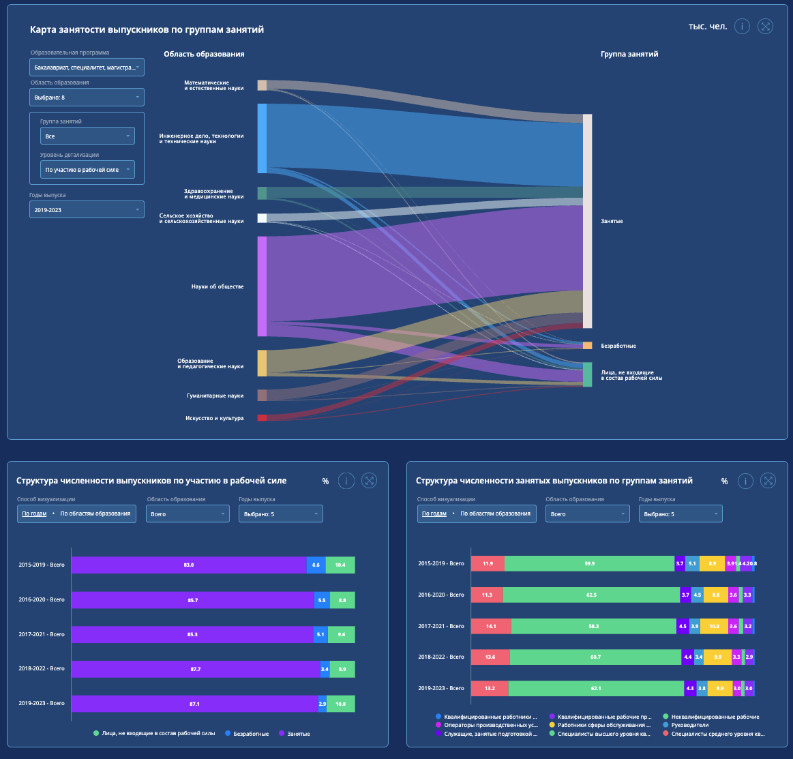 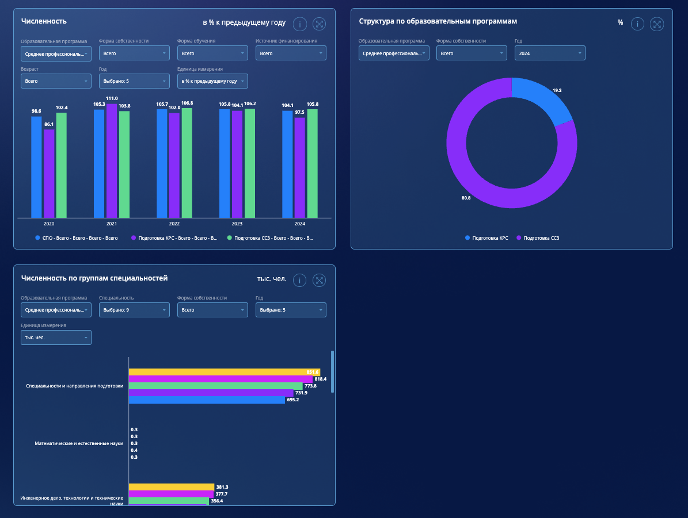 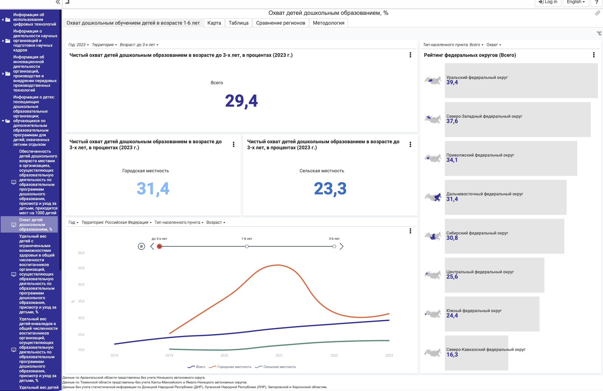 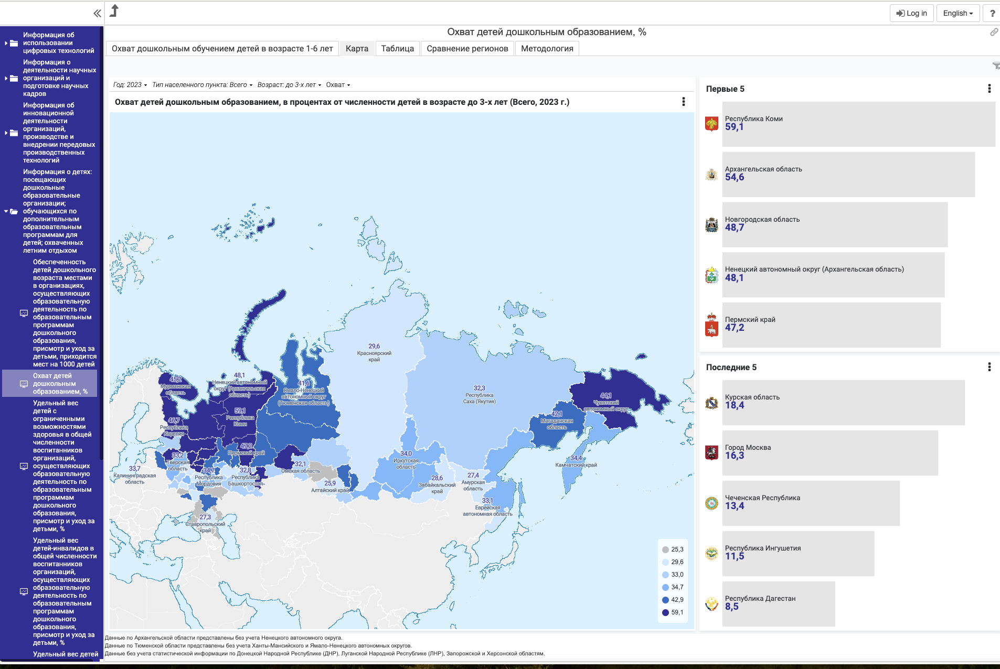 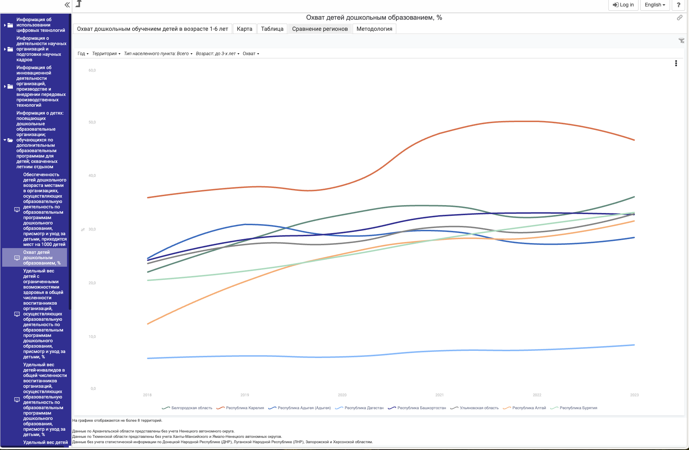 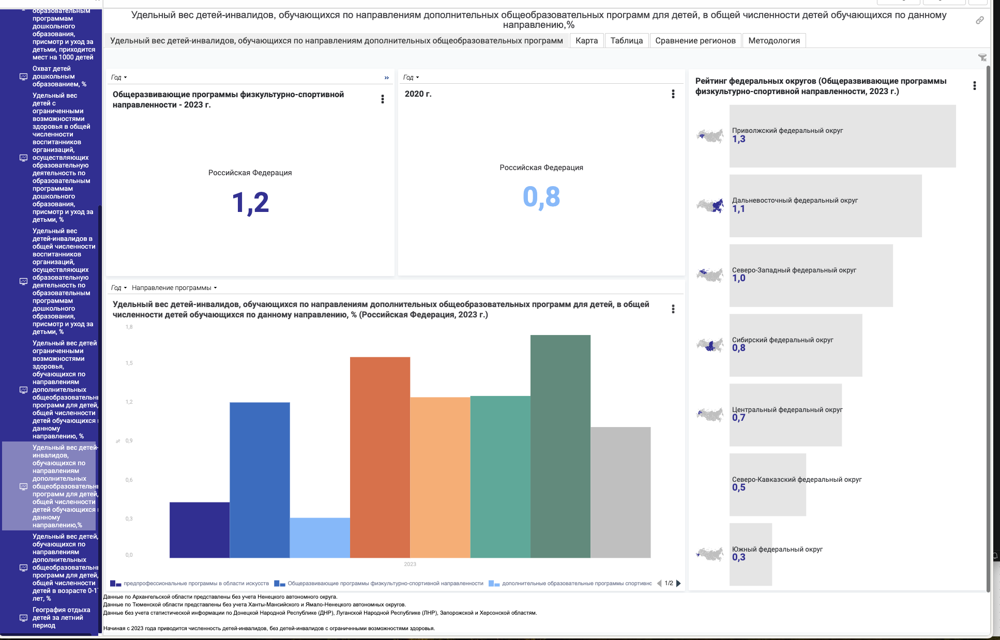 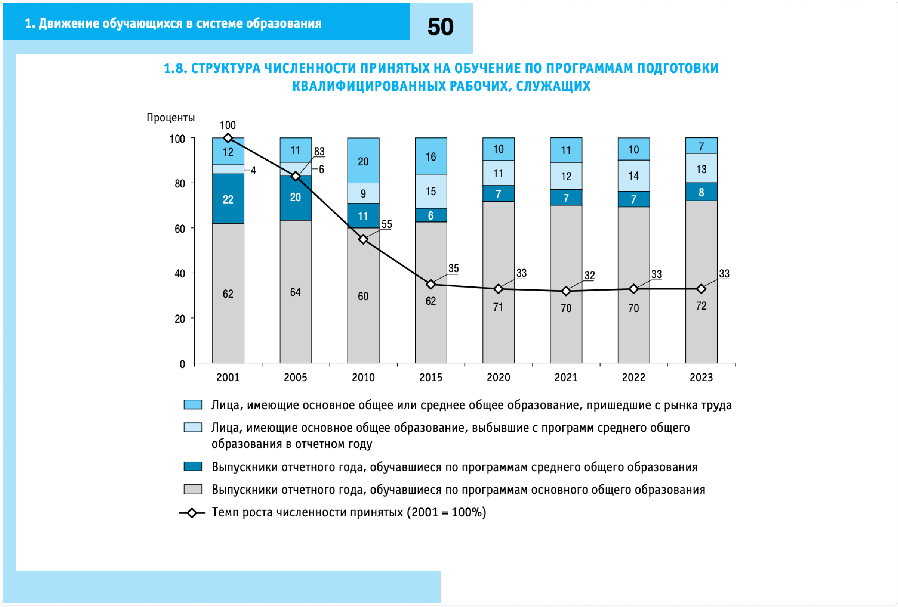 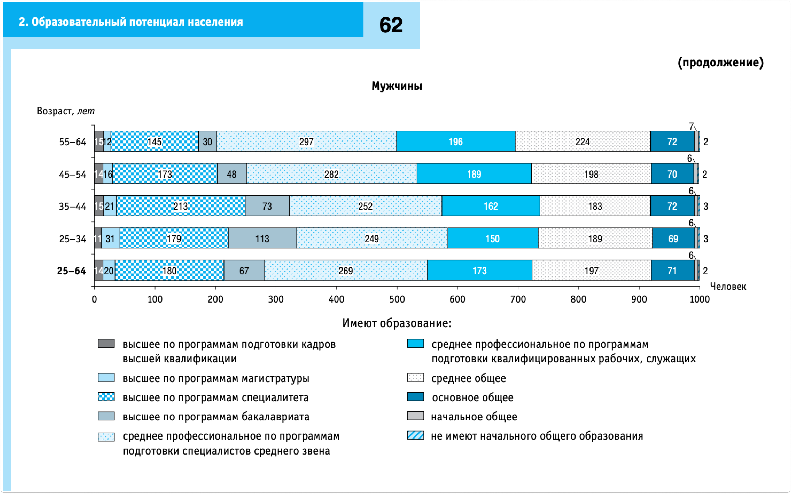 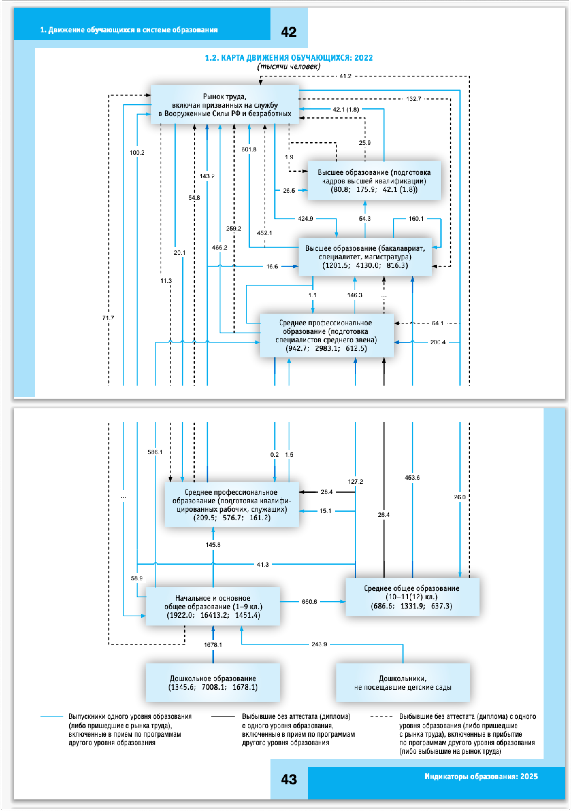 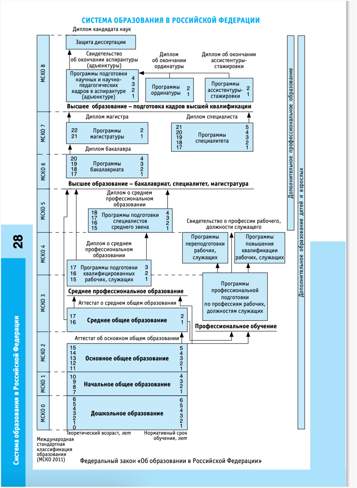 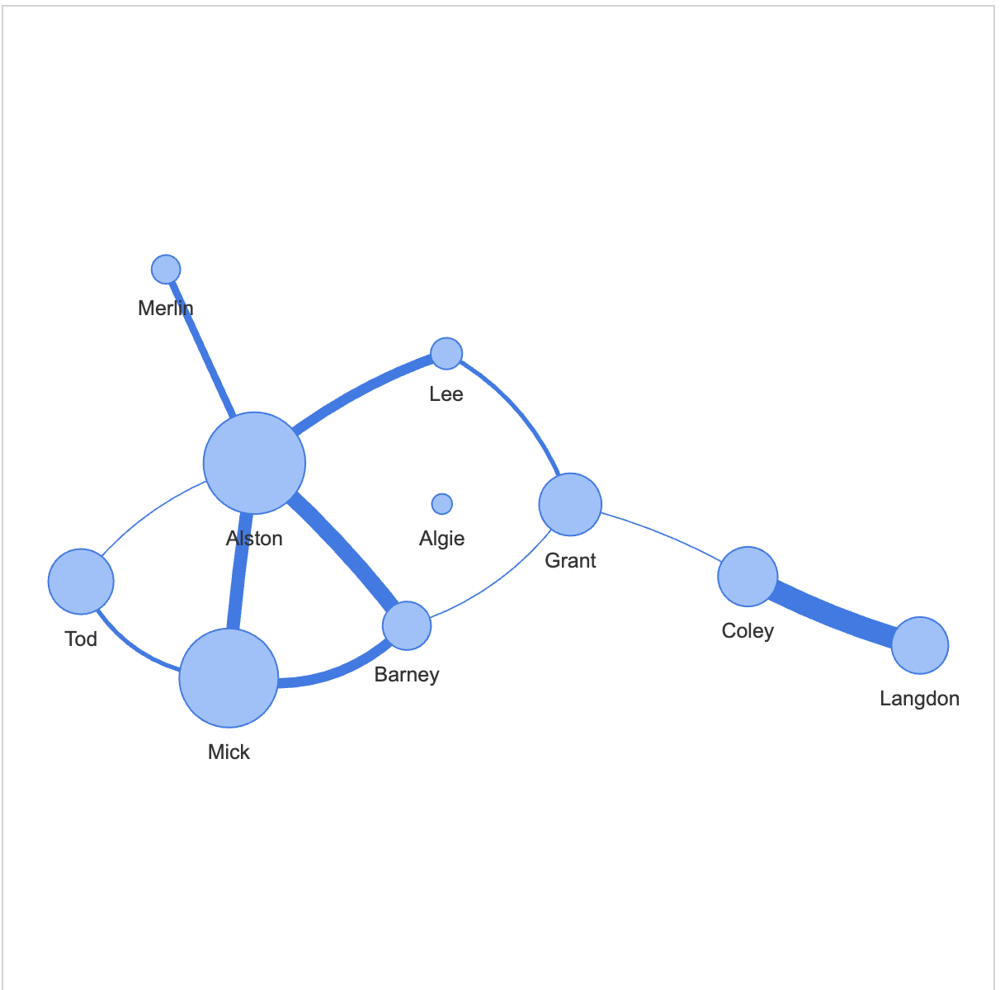